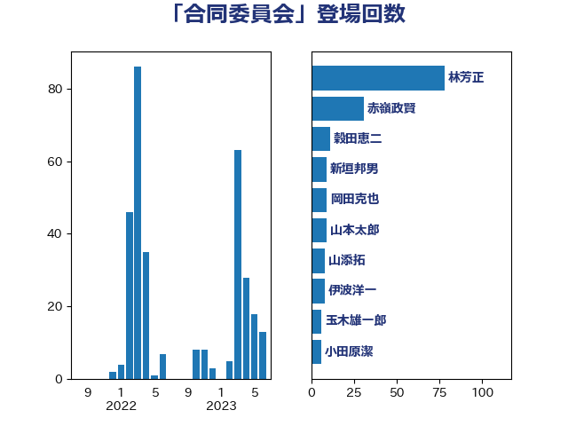

単語「合同委員会」

| 林芳正 | 自由民主党 | 78 回 |
| 赤嶺政賢 | 日本共産党 | 31 回 |
| 穀田恵二 | 日本共産党 | 11 回 |
| 新垣邦男 | 立憲民主党 | 9 回 |
| 岡田克也 | 立憲民主党 | 9 回 |
| 山本太郎 | れいわ新選組 | 9 回 |
| 山添拓 | 日本共産党 | 8 回 |
| 伊波洋一 | 無所属 | 8 回 |
| 玉木雄一郎 | 国民民主党 | 6 回 |
| 小田原潔 | 自由民主党 | 6 回 |
| 武井俊輔 | 自由民主党 | 4 回 |
| 岸田文雄 | 自由民主党 | 4 回 |
| 大島九州男 | れいわ新選組 | 4 回 |
| 高良鉄美 | 無所属 | 3 回 |
| 美延映夫 | 日本維新の会 | 3 回 |
| 徳永久志 | 無所属 | 3 回 |
| 高橋千鶴子 | 日本共産党 | 2 回 |
| 高木真理 | 立憲民主党 | 2 回 |
| 近藤昭一 | 立憲民主党 | 2 回 |
| 谷田川元 | 立憲民主党 | 2 回 |
| 浜田靖一 | 自由民主党 | 2 回 |
| 浅川義治 | 日本維新の会 | 2 回 |
| 榛葉賀津也 | 国民民主党 | 2 回 |
| 早稲田ゆき | 立憲民主党 | 2 回 |
| 斉藤鉄夫 | 公明党 | 2 回 |
| 山井和則 | 立憲民主党 | 2 回 |
| 天畠大輔 | れいわ新選組 | 2 回 |
| 國場幸之助 | 自由民主党 | 2 回 |
| 加藤勝信 | 自由民主党 | 2 回 |
| 鈴木俊一 | 自由民主党 | 1 回 |
| 金子道仁 | 日本維新の会 | 1 回 |
| 金城泰邦 | 公明党 | 1 回 |
| 西銘恒三郎 | 自由民主党 | 1 回 |
| 西村明宏 | 自由民主党 | 1 回 |
| 稲富修二 | 立憲民主党 | 1 回 |
| 田村智子 | 日本共産党 | 1 回 |
| 松本尚 | 自由民主党 | 1 回 |
| 杉田水脈 | 自由民主党 | 1 回 |
| 本田太郎 | 自由民主党 | 1 回 |
| 木村次郎 | 自由民主党 | 1 回 |
| 打越さく良 | 立憲民主党 | 1 回 |
| 川田龍平 | 立憲民主党 | 1 回 |
| 山際大志郎 | 自由民主党 | 1 回 |
| 小西洋之 | 立憲民主党 | 1 回 |
| 小池晃 | 日本共産党 | 1 回 |
| 宮本徹 | 日本共産党 | 1 回 |
| 大串博志 | 立憲民主党 | 1 回 |
| 勝部賢志 | 立憲民主党 | 1 回 |
| 上田清司 | 国民民主党 | 1 回 |